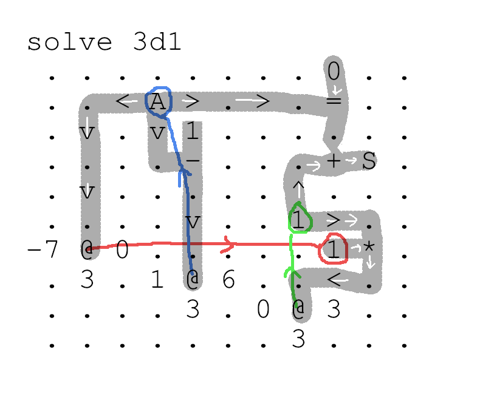

Here's how factorial works. "A" marks the input, which gets
decremented by one with every iteration. Call this value x. It
propagates along three data paths, left, down, and right.
- The green circle is a register, call it r. We multiply x against it every iteration.
- The purpose of the left path is to overwrite the value in the red circle with the current value of x
- The purpose of the down path is to decrement x.
- The purpose of the right path is to compare x with zero,
and if it is zero, then we unblock the green value r, and let it flow to S, the solution output.